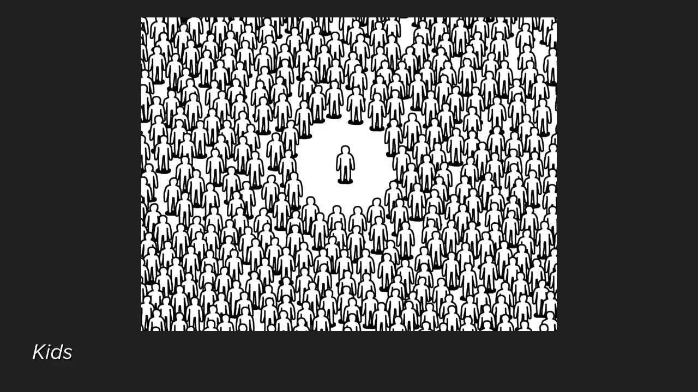
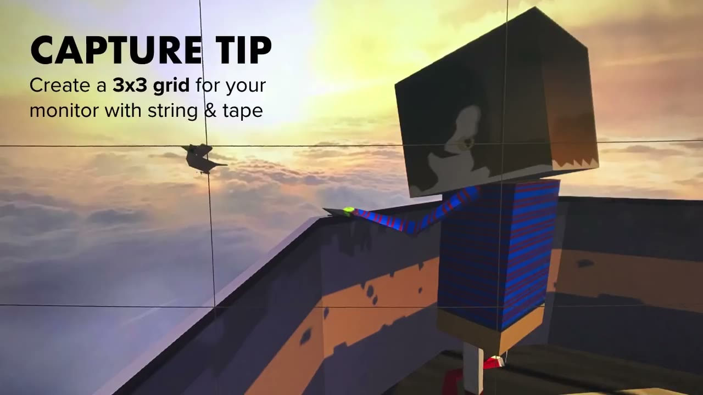
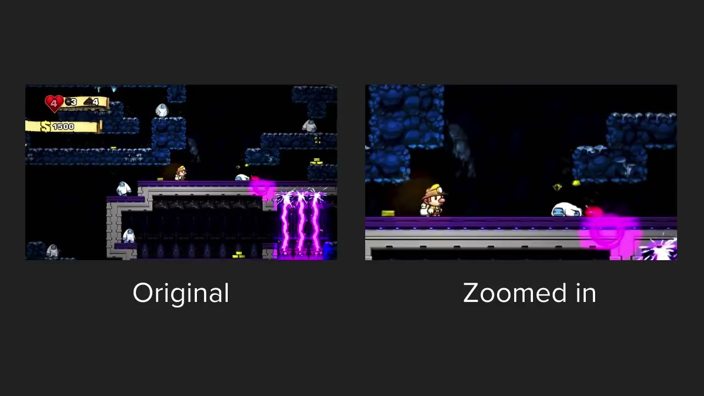
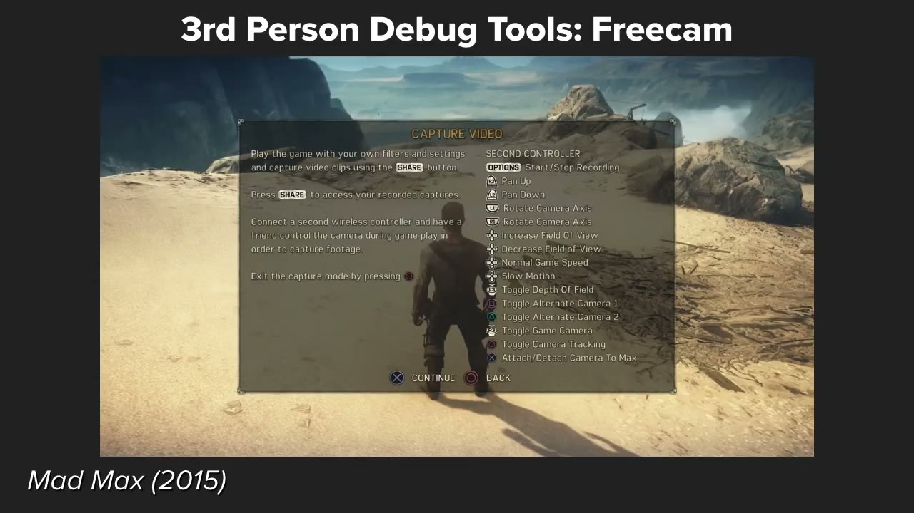
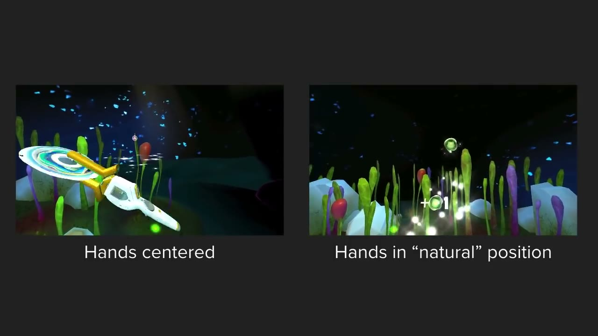
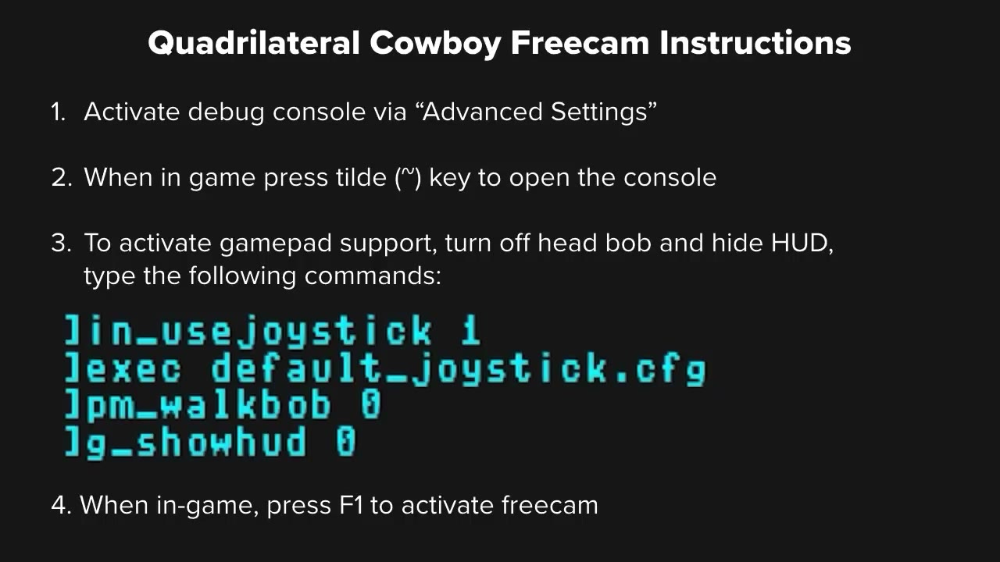

Start here
The overview
Derek Lieu’s re-recording of his 2018 GDC talk treats capture as filmmaking inside a game. The capture artist directs attention, operates a camera, and performs through an avatar. The aim is not simply excellent play or attractive screenshots: each moving shot should communicate an intended idea to someone who does not have a controller in hand.
The talk moves from capture equipment and the factors that make a game difficult to explain, through composition, eye trace, readability, and performance, into a detailed catalogue of useful developer tools. It finishes with first-person, third-person, 2D, and VR considerations and games for practice. Eighteen selected snapshots support the reading, including useful comparisons and setup commands that the spoken captions leave on screen.
What the snapshots add
- The inspected examples show how negative space separates a figure from a crowd, how a closer crop simplifies a platforming shot, and how VR hand position changes what the external recording contains. The Quadrilateral Cowboy slide supplies four exact setup commands omitted from the spoken captions. A cursor slide is labeled Thimbleweed Park, while the spoken cleanup anecdote concerns Unavowed; this reading keeps those examples distinct.
What to take away
- Decide what each shot communicates
Start with one action, intention, or emotion. Refine the capture until that idea is visible, rather than hoping ordinary play produces the right moment.
- Clarity depends on more than visual spectacle
Object count, camera distance, visible cause and effect, and audience familiarity determine how much interpretation a viewer must do.
- Stage the performance for the viewer
Movement, pauses, looking, and camera speed can make the same interaction feel deliberate, nervous, graceful, or playful.
- Build tools that make good takes repeatable
HUD and music toggles, location shortcuts, controllable game state, and smooth cameras save time while expanding the shots a trailer can contain.
Capture is the first impression many people will actually see
Lieu introduces this as a re-recording of his GDC presentation, made so developers and trailer makers can use it without attending the conference or accessing its recordings. His examples draw on indie projects such as Firewatch, Ooblets, Dead Cells, Subnautica, and Tacoma, alongside agency editing work on larger games. Different projects supplied different debug tools; the talk gathers the most useful practices he encountered.
Capture serves trailers, animated GIFs, development updates, press material, and montages. His central framing is that more people will see this footage than play the game. The footage chosen by the team is an opportunity to control how the game is introduced; once it is released, somebody’s first encounter might instead be any player’s recording.
Successful capture therefore communicates. If a viewer cannot understand what a shot is showing or why it is there, technical image quality alone has not made it successful. The viewer lacks the physical feedback and accumulated knowledge of the person playing, so the shot has to carry its meaning visually.
Choose recording and editing tools for the job
Lieu’s equipment overview is from 2018. For PC capture he discusses ShadowPlay and Bandicam, describing GPU-assisted recording and high-bitrate H.264 MP4 files as sufficient for his indie trailer work, including large-screen presentations. He mentions ScreenFlow on Mac and the conversion or file-size inconveniences he encountered with other tools. Those are historical workflow observations, not a current comparison of software versions.
For consoles he lists capture hardware from Elgato, AverMedia, Hauppauge, and Razer, alongside Blackmagic devices that can capture uncompressed video. He warns against assuming uncompressed is automatically the better production choice. It can be easier to edit, but the files are enormous, and a visible quality difference may matter less after online recompression and viewing on a phone. The important basics are the required resolution and frame rate.
He edits in Premiere Pro but recommends using an editor the creator knows, provided it supports the needed video and audio tracks, resolutions, and frame rates. He also names alternatives and free editions available at the time, advising trials before purchasing. For GIFs he mentions Honeycam, GIF Brewery, and GIF Gun for After Effects. Familiarity, budget, compatibility, and manageable files should support the work rather than become a distraction from making clear shots.
Assess four factors that make capture difficult
The first factor is visual feedback: can a spectator see an action changing something? Mario landing on an enemy or a Street Fighter hit can communicate immediately. Flashy animation alone is insufficient. Lieu contrasts those examples with games where repeated attacks mainly reduce a health meter until something finally dies; a newcomer may not understand the effect of each action.
The second factor is the number of objects competing for attention. Multiplayer, strategy, and MOBA footage can require the spectator to identify many independently moving elements. The third is camera distance, which often increases that information load. The factors interact rather than form absolute rules: Limbo has a relatively distant view but a clear lone character, so it can still be easy to read.
The fourth factor is audience familiarity. Cars, fishing rods, and guns arrive with everyday associations. Mario’s jumping is familiar to many viewers. A MOBA’s units, abilities, and objectives may not be. Capture intended for existing players can assume knowledge that a broader introduction has to establish. Lieu uses this to explain why some mechanically dense games choose pre-rendered introductions; he is not judging those games as better or worse.
A crowded image can still have focus. The inspected Kids example places one figure in an open white circle within a dense crowd, making that figure easy to find. Coordinated action by several similar units can likewise create a single readable event. Lieu suggests these questions can even help development: if an effect is hard to communicate visually, the game’s feedback itself may be worth reconsidering.


Treat capture as directing, operating a camera, and performing
Playing normally can help discover a promising moment. Capture begins to become purposeful when the artist then refines that moment into the shot needed. Perfect gameplay is not necessarily the goal; the best take is the one that communicates the intended action or idea.
Lieu describes three roles. As director, the artist chooses the shot’s purpose, framing, movement, and tempo. As camera operator, the artist positions and moves the view. As puppeteer, the artist gives the controlled character a performance. All three operate through film language because the audience is watching rather than participating. His next three priorities—composition, readability, and performance—follow from that distinction.
Compose deliberately and give yourself room to reframe
Centering the important action is a useful default, particularly when several shots must cut together quickly. Lieu also recommends the rule of thirds: divide the image into a 3×3 grid and place subjects along its lines or regions. The inspected monitor photograph shows an inexpensive physical guide made with string and tape. An image of a grid can provide the equivalent guide in an editor.
When turning off a game’s crosshair, a small physical sticky marker on the monitor can retain a center reference without recording it. For footage that will be reframed, capturing above the final output resolution provides room to crop without enlarging the image as aggressively. He does not say every shot must be recorded at a higher resolution.
For pixel art, he relays Kert Gartner’s After Effects technique: use the layer’s Draft quality setting for nearest-neighbor scaling, enlarge a 1080p clip to 4K, precompose it, then edit in a 1080p sequence. This preserves hard pixel edges during reframing better than soft interpolation. Lieu also says he personally often tolerates enlargements around 150%, given the eventual recompression. That is his practical judgment, not a promise that any source can be enlarged that far without damage.


Use eye trace to make fast cuts easier to follow
Eye trace concerns where the viewer is looking before and after a cut. If the important subject suddenly moves to a distant part of the frame, the audience spends time locating it again. In a fast trailer, that search can consume much of the next shot and prevent the intended information from registering.
Lieu uses Kert Gartner’s Celeste trailer, with a pink circle marking the subject, and contrasts it with a deliberately difficult edit. The inspected still confirms the annotation around the small character; it does not by itself demonstrate the continuity of every cut. His practical recommendation is to plan or reframe shots so the viewer can keep following the action without repeatedly hunting for it.
For further study he names Lindsay Ellis’s Transformers essay, Vashi Nedomansky’s Mad Max center-framing video, and Jackie Chan: My Stunts. The latter shows accepted and rejected takes, including the effort to get a bottle break to happen in the center of the image. The lesson is that making an action readable can require deliberately repeating it, not simply keeping the first technically successful take.
Simplify the image until its main idea reads immediately
Readability is related to framing but emphasizes how quickly the image can be understood. The inspected cat comparison makes this plain: both photographs contain two black cats, but the left also contains dark clothing and a bag. The right separates the cats against relatively uncluttered carpet. Removing competing shapes makes the intended information easier to extract.
A player can filter the noise of damage numbers, enemies, and effects while actively playing. A spectator receiving a rapid sequence of unfamiliar shots has less help. Lieu says he removed extraneous enemies from much of his Dead Cells capture so they would not compete with the intended action. Trying to show many things at once can mean the audience remembers none of them.
The Spelunky comparison shows another solution: crop closer. The inspected original includes more level geometry, smaller action, and HUD information; the enlarged version directs attention toward the nearby character and interaction. The trade is deliberate selection, not a claim that zooming is always best. Removing enemies or items can also reduce clutter.
He proposes two quick tests. Squint at the image to see which large shapes attract attention when fine detail disappears; if the wrong element dominates, change the shot. Also watch candidate footage at high speed: if its basic action remains understandable, it is likely to read more easily at normal speed. He mentions the then-active microtrailers account as a source of very short examples, not as a verified current service.


Choose whether the performance belongs to the character or the player
Capture can present a character convincingly inhabiting a scene, or show the person at the controls interacting with a game. Lieu contrasts impressive Uncharted footage from SunhiLegend with a more obviously playful approach. Both can be appropriate; they communicate different experiences.
For a character-driven story, acting according to the character’s situation often makes sense. Competitive or multiplayer footage may instead need to show what actual players do. Some games sit between those approaches. The capture artist should choose consciously rather than assume every game should look like either flawless cinematic action or ordinary couch play.
Movement itself carries personality. A spectator makes judgments about a driver from how the car moves, even without seeing the driver. The same is true of an avatar, a first-person camera, or a cursor. Speed, direction, hesitation, and rhythm supply a performance even when the artist cannot change the underlying animation.
Build intention through looking, pauses, and movement
In first person, what the camera notices can imply what the character thinks. Lieu describes a Firewatch shot in which Henry appears to consider throwing fireworks into a fire pit. Another example follows him taking a boombox near a lake: a calm approach, a look toward the teenagers, a pause, the throw, and a retreat without immediately looking away. He contrasts that with rushing in, throwing the object, and leaving before it lands. The same basic interaction produces a different impression through timing.
The inspected lake still shows the boombox held against the sunset scene; the calm-versus-frantic sequence is described here from Lieu’s explanation, not inferred from one image. His Spelunky examples make the same point through reckless, quick play versus cautious, novice-like movement. A game’s apparent personality changes with the performance chosen for the camera.
He also plays Firewatch dialogue with and without small movement pauses. The captions do not transcribe all dialogue in those embedded clips, so this reading preserves his stated comparison without inventing missing lines. His advice is to capture one idea at a time—one action, intention, or emotion—and then build on it. Not every shot needs elaborate acting; some simply need competent gameplay.
He recommends Tony Zhou’s Every Frame a Painting episode about the Spielberg oner, which examines long takes containing several compositions. A continuous game capture can similarly stage several readable moments within one take.
Match the controls and timing aids to the movement
Analog controllers make slow, smooth moves easier. Lieu cites an Xbox Elite controller for situations requiring simultaneous camera adjustment and face-button actions, including a moving interaction in The Wild Eternal. Keyboard and mouse are useful for sudden turns: he used that control scheme for a fast Firewatch reaction intended to support a joke.
Each option has limits. Sticks make very rapid camera movements harder; ordinary keyboard movement may be effectively on or off unless the game exposes speed settings. Choose the input method for the shot’s required motion rather than treating one as universally superior.
For coordinated actions, use a metronome set to the trailer music’s tempo. Lieu did this for Cosmic Trip so gestures would line up with the beat. Looping the actual music while capturing is another method he has used. These tools make timing something that can be rehearsed and repeated rather than repaired entirely in the edit.
Plan debug tools before the trailer becomes urgent
Capture tools save time, but they also change the range of possible shots. Lieu asks developers to consider them early, especially when planning regular updates or expecting another person to create a trailer. He explicitly acknowledges finite development time: the catalogue is a set of useful possibilities, not a demand to implement every feature.
He plays an Ooblets teaser comparison with and without the debug camera. The inspected frame confirms the side-by-side labeling and one shared subject, a yellow creature outdoors; a still cannot establish the full difference in motion or shot variety. The role of the example is to demonstrate why access to a controllable camera can matter creatively, rather than merely make normal gameplay capture more convenient.
Separate presentation overlays and audio from the useful capture
A HUD toggle is his first essential. Text and overlays draw attention away from the image, and platform-specific button prompts can force a team to recapture or replace graphics for different versions. He recalls agency work where that replacement was necessary. The underwater HUD-off example illustrates a less obstructed view, though the still does not show the act of switching the HUD.
Music needs its own toggle, separate from sound effects. If the recorded gameplay already contains music, using its effects under a different trailer track becomes difficult; the editor may have to rebuild them manually. Capturing effects without the game music can also preserve useful spatial panning that would take more work to recreate afterward. These small options prevent substantial repetitive postproduction.
Make locations and game states quick to restore
Level skipping and teleportation let the capture artist return to useful material. Lieu describes using coordinates and warp commands in Subnautica, and visible level numbers in The Adventure Pals. A first exploratory pass can identify shots; labels and shortcuts make the later, more deliberate pass repeatable.
Inventory controls let the artist choose items and modifiers rather than acquire them through normal play. Enemy spawning lets a promising location host repeated takes without reloading or losing a procedurally generated layout. Dead Cells supplied both kinds of control. The purpose is to construct a useful capture situation and repeat the action until it works.
Invincibility avoids constant restarts. A fast mode, as in his Octogeddon work, helps reach later material; Dead Cells’ tourist mode let him pass enemies while scouting. These are time-saving capture conditions, not necessarily features being advertised to the player. Their value is preserving the artist’s attention for the shot rather than repeatedly paying the cost of setup.
Hide distractions and control the available light
Cursor visibility matters for point-and-click capture: the artist still needs to activate things, but the pointer need not appear in the finished shot. The inspected slide labels its current example Thimbleweed Park. Lieu’s spoken anecdote then concerns Unavowed, where he used a patchwork of footage in After Effects to remove a cursor from a party-selection shot. He says a hide-cursor option would have saved hours. The pictured example and that anecdote are distinct.
Object highlights are another deliberate attention magnet that may be unnecessary unless the shot is specifically about the interface. A toggle gives the artist a choice. Time-of-day control is likewise valuable for selecting light: in Subnautica he could accelerate the cycle to find a look, then slow it down to capture. It avoids waiting through an entire cycle each time a take needs repeating.
First-person cameras need smooth, adjustable motion
A head-bob toggle allows a choice between the protagonist’s embodied movement and a smooth environmental view. A freecam supplies angles, object closeups, and movement that normal player controls cannot easily provide. Lieu often asks for vertical movement on the triggers because they add analog control beyond the two sticks.
For capture, an immediately responsive competitive camera can be the wrong tool. He wants speed settings that support both fast repositioning and slow recording. In Subnautica he could trigger an event, move quickly into place, then reduce camera speed for the take. Sliders and hotkeys are easier to use than guessing arbitrary numerical console values.
Dead zones reduce unintended stick movement, and smoothing can average input over a short period so starts, stops, and transitions are less abrupt. He describes The Wild Eternal’s smoothing and graduated sensitivity as helpful when changing from two-stick movement to one-stick movement. The inspected landscape frame shows the setting being discussed, not the temporal effect of smoothing itself. The aim is movement that can begin and end gracefully.
Third-person capture must coordinate camera and character
Ooblets supplies Lieu’s main example. The normal camera follows the character positionally. In its capture mode, other controls can offset the camera while it continues following, allowing wider framing, side angles, orbiting, and moves that combine travel with a push-in. He could also detach the camera and leave it fixed while moving the character, useful for decorating or farming montages. Hiding the player is helpful when filming environments or NPCs.
He qualifies the recommendation: Ooblets uses relatively simple character controls, leaving buttons available for the camera. The same mapping would conflict with an action game that uses every button. For such games he suggests setting an offset, locking it, then controlling the character normally from that framing.
Mad Max’s 2015 retail video mode provides another solution: a second controller operates the camera while the first operates Max. The inspected help panel documents camera functions including field of view, alternate cameras, tracking, and attachment. Lieu also discusses vertical movement, tilt, slow motion, and preset angles. One person can alternate between setup and play, or two people can divide the jobs.
His criticism of that mode is its high default sensitivity without useful speed settings. He distinguishes this moving-video functionality from a photo mode that only helps with stills, and wishes similar features were easier to access in other games. That comparison belongs to his 2018 experience, not a survey of today’s games.


For 2D games, add only the camera controls that help
Two-dimensional capture has fewer axes to manage, but a freecam can still show levels independently of the player. Lieu used that ability for new Dead Cells environments.
He also proposes zoom and position offsets inside the game, qualified by an important condition: they are worthwhile if the assets scale better there than in the editor. He suggests pixel art as a possible application, rather than claiming that every 2D game gains quality from an in-engine zoom. This is a proposed tool, distinct from the features he reports actually using.
Extra controls can improve staging without distorting the game
NPC control can make composition repeatable; in Unavowed he could arrange other characters directly. A separately operated camera can also support complex third-person shots. Lieu recalls simultaneously using a gamepad and a keyboard for an Ooblets shot, an awkward workaround a second person could simplify. In co-op, a third controller dedicated to the camera would free both players to perform.
Time freezing lets the artist pause action, reposition the view, and resume. It helps when playing from an unusual angle would be difficult, and supports match cuts. Slow motion can likewise make complex sequences easier to perform, but Lieu is cautious about leaving it in a trailer if the game has no corresponding ability.
He describes SunhiLegend recording Uncharted in slow motion and restoring normal speed for the finished GIFs. Simple, predictable time-scale ratios are more useful for that workflow than excessively fine numerical precision. The distinction is between using a capture aid to produce a normal-speed performance and advertising a slower game experience that players will not actually receive.
VR requires staging for the external image, not only the headset
Lieu points to Kert Gartner’s work on virtual cinematography and agrees that a person’s head is not automatically a good camera. An alternate view showing an avatar can communicate more than a headset-only view, just as a freecam expands a first-person game’s options. If first-person VR capture is necessary, the external recording needs deliberate attention.
He recommends motion smoothing for the monitor output and checking that it does not break filters or effects. Shaky footage can be unpleasant even for a person merely reviewing it. Use the eye that corresponds to the mirrored monitor image: composing through the other eye can put an aimed object at the wrong angle in the actual recording.
Find the center of the recorded view through test capture. Lieu describes a small sticky marker on the corresponding lens, adjusted until an intended subject is actually centered. His recommendation is a calibration technique from his workflow, not an assumption that where an object feels centered in the headset is where it appears on the monitor.
Hands also need to be staged for the picture. The inspected comparison shows prominent virtual hands and tools in the centered version, while the comfortable natural position largely leaves them outside the image. It may feel awkward to hold the controllers high enough, but the audience cannot understand a gesture that is outside the captured frame.
A partner watching the monitor can direct framing and hand placement. Check that the mouse cursor is not sitting over the recording or likely to be nudged. He also suggests a dancer, martial artist, or similarly practiced performer for repeatable, energetic choreography: in VR, tiny physical movements are directly visible. An independent camera remains valuable for variety.


Practice with repeatable scenes and accessible camera tools
Lieu recommends Mad Max for third-person capture practice because its retail release includes the video tools discussed earlier. For first-person work he suggests Quadrilateral Cowboy, where the console and a freecam are accessible. The inspected setup slide supplies details that the spoken captions refer to without reading aloud.
His displayed sequence is to enable the debug console in Advanced Settings, open it in the game with the tilde key, then enter four commands: in_usejoystick 1; exec default_joystick.cfg; pm_walkbob 0; and g_showhud 0. They enable joystick use, load the joystick configuration, disable walking bob, and hide the HUD in the setup he demonstrates. The leading bracket visible on each console line is the prompt, not part of the command. Press F1 in the game to activate freecam. He also mentions FIND for exploring other commands. These are the talk’s historical game-specific instructions, not newly tested compatibility claims.
Tacoma offers another kind of practice: scenes can be rewound, making repeated camera positions and NPC framing easy to try. Lieu describes it as a virtual film set where the same performances can support different angles and edits. The shared advantage of these examples is access to repeatable material, so attention can go into composition and visual storytelling.


Study visual craft and keep the shot’s intention clear
Lieu’s inspiration list includes Andy Kelly’s Other Places environmental videos, SunhiLegend’s gameplay GIFs, Rebecca Cordingley’s Ooblets posts as nonplayercat, Composition Cam’s film-frame analysis, and One Perfect Shot. His comments about whether particular accounts were still updating describe the time of the recording. The useful reason for studying them is to see how framing, movement, and selection make game footage readable and appealing.
He also encourages watching film craft: Kurosawa for framing, and action work associated with Jackie Chan, Yuen Woo-ping, John Wick, Edgar Wright, and Guillermo del Toro for blocking, spatial clarity, and editing. He is offering sources of ideas, not demanding that a small game trailer imitate a Hollywood production.
The closing advice returns to the same practical chain. Think about capture early; provide the tools that make useful shots possible; treat control as a performance; decide what each shot is meant to convey; and strip away what interferes with that message. A Jackie Chan excerpt closes the lesson, but the manual captions omit its spoken content and one inspected still does not establish the complete advice, so it is not reconstructed here.
Source & limitations
This is an editorial synthesis of GDC 2018 - Capturing Great Footage For Game Trailers, published by Derek Lieu. Timestamp links open YouTube at the corresponding section.
- Based on the complete manual English-caption transcript of Derek Lieu’s 46:43 re-recording of his 2018 GDC talk. Embedded demonstrations include intervals without transcribed dialogue; missing lines are not invented.
- Eighteen targeted snapshots were inspected. Reproduced images and readable slide details are verified at those moments, including the Quadrilateral Cowboy commands. Still images do not verify motion, camera smoothing, every cut, complete performances, or the full contents of uninspected clips. Descriptions of sequences rely on Lieu’s spoken explanation where indicated.
- Capture software, hardware, prices, available editions, game controls, and resource-account status reflect the 2018 talk. This reading does not verify present-day availability or compatibility, and its game-specific commands were transcribed from the slide rather than executed.
- The inspected cursor slide is labeled Thimbleweed Park. The later spoken account of removing a pointer in postproduction concerns Unavowed; the image is not treated as proof of that separate anecdote.
Inspected snapshots (18)
Selected stills, not continuous video review. Observations below describe the inspected frames.
6:00 ↗
- A visual-feedback spectrum places recognizable game logos from low to high feedback. It is a qualitative comparison, not a numerical measurement of game quality.
9:25 ↗
- The Kids example shows one outlined figure isolated in a white circular opening within a dense crowd of similar figures. Negative space creates a clear focal point despite the many objects.
12:10 ↗
- The composition tip displays a photograph of a monitor with a physical 3×3 grid over the image and recommends making it with string and tape.
14:20 ↗
- The Celeste trailer example places a thick pink circle around the small player character in the lower-right area. A single frame establishes the annotation, not continuity across cuts.
15:55 ↗
- The readability slide compares two photos of two black cats. The left also contains dark clothing and a bag; the right separates the cats clearly against largely uncluttered pale carpet.
16:05 ↗
- The Dead Cells sample contains overlapping effects, enemies, and damage text during combat. The still shows visual density but cannot establish what the player understands while playing.
17:05 ↗
- The Spelunky comparison labels an Original wide view and a Zoomed in crop. The crop enlarges the player and nearby action while excluding much of the surrounding level and HUD.
20:47 ↗
- The Firewatch performance example shows a first-person view holding a boombox near a lake at sunset, with the far shore ahead. This still does not establish the timing of the throw or hesitation.
25:45 ↗
- The slide says to think early about debug tools and uses a cat photograph. No debug-camera comparison is visible at this instant.
26:20 ↗
- The Ooblets teaser comparison labels Debug Camera and In-game Camera. At this instant both show a yellow creature in a grassy fenced area; the full motion and shot variety are not established by the still.
27:20 ↗
- The HUD-toggle slide shows an underwater Subnautica view without the usual large HUD panels. A single image cannot establish the act of toggling.
30:10 ↗
- The cursor-visibility slide currently labels its point-and-click example Thimbleweed Park. This differs from the later spoken Unavowed cleanup anecdote; they should not be treated as the same pictured example.
33:00 ↗
- The camera-smoothing slide shows a broad blue landscape from The Wild Eternal. The effect of smoothing itself cannot be checked in a still.
34:05 ↗
- The Ooblets third-person freecam example shows a wide, dark outdoor scene with small characters and lights. It does not by itself prove the tracking movement discussed in the narration.
35:40 ↗
- Mad Max (2015) displays a capture-video help panel listing second-controller camera controls, including field of view, slow motion, alternate cameras, camera tracking, and attachment to Max.
41:37 ↗
- The VR comparison labels the left view Hands centered and the right Hands in natural position. The left visibly includes large virtual hands/tools, while the right largely leaves them outside the image.
43:35 ↗
- The Quadrilateral Cowboy slide gives Advanced Settings/tilde-console instructions and the commands in_usejoystick 1, exec default_joystick.cfg, pm_walkbob 0, and g_showhud 0; F1 activates freecam. Leading closing brackets are console prompts, not part of the commands.
46:10 ↗
- The closing excerpt shows Jackie Chan outdoors with an object in his hands and an on-screen subtitle fragment. The complete spoken advice is not established from this one inspected moment.
Read the timestamped source captions
en · manual captions. Caption errors and non-speech labels are retained in this source view.
0:00 ↗ Hello! My name is Derek Lieu and at GDC this year...
0:04 ↗ I did a talk about capturing great footage for game trailers.
0:07 ↗ I decided to re-record it since I want
0:10 ↗ as many developers, trailer editors and capture artists to see this...
0:14 ↗ since not everyone can afford the luxury of going to GDC...
0:17 ↗ or even getting access to the GDC Vault.
0:20 ↗ And I think it's very useful information.
0:22 ↗ If you aren’t already familiar with my work,
0:25 ↗ as of this recording I’ve been making game trailers for about five years,
0:28 ↗ and I’ve been working as an editor for about 15 years.
0:32 ↗ By the way, if you go to this link,
0:34 ↗ you can download a PDF of the slides from this talk.
0:38 ↗ So like I said, I’m a trailer editor, and some games I've worked on include:
0:42 ↗ Firewatch, Ooblets, Dead Cells, BattleBlock Theater, Subnautica, Tacoma and lots more.
0:48 ↗ I've also worked as an editor at agencies in Los Angeles, where I cut some trailers for AAA games like:
0:53 ↗ Mortal Kombat X, Shadow of Mordor, Mad Max, and lots of LEGO games.
0:58 ↗ I've worked on games from a wide variety of genres,
1:01 ↗ and they all have unique needs when it comes to capturing footage from them...
1:04 ↗ and the tools that make it easy to do.
1:07 ↗ I’m going to talk a lot about shot composition...
1:09 ↗ and how to make shots both aesthetically pleasing and easy to understand.
1:13 ↗ I originally came up with the idea for this talk in 2017 because...
1:17 ↗ Every developer I've worked with had different debug tools. So...
1:21 ↗ I thought I'd aggregate all that information,
1:23 ↗ and share the best of everyone's tools that helped me...
1:26 ↗ get the best possible shots for trailers I made.
1:29 ↗ Why care about game capture?
1:31 ↗ Game capture is simply video footage of the game.
1:34 ↗ You need it for trailers, animated gifs, dev logs,
1:37 ↗ b-roll for montages, and press coverage.
1:40 ↗ But most importantly, a good way to think about it is:
1:44 ↗ More people will see your game capture than play your game.
1:47 ↗ We'd love to think that every trailer view turns into a sale,
1:50 ↗ but far more people will see footage of your game than actually play it.
1:55 ↗ The game capture you release is the only time you ever have full control over how your game looks.
2:00 ↗ Once it’s released, you have NO IDEA what kind of footage will be someone’s first impression of your game.
2:05 ↗ So, you should want to make it look good.
2:08 ↗ Also, if your friends, parents or extended family don't play games,
2:12 ↗ then game capture might be the only way you can show them what it is you do.
2:16 ↗ The main thing to think about is:
2:18 ↗ Successful game capture communicates effectively.
2:22 ↗ This seems like an obvious thing to say,
2:24 ↗ but if someone watches a shot that you captured,
2:26 ↗ and they don’t have any idea what’s happening, or what the shot is trying to say,
2:31 ↗ then it’s not good capture.
2:33 ↗ Here's a quick overview of software and hardware for capturing and editing.
2:37 ↗ There are a bunch of solutions for PC game capture, but they all essentially do the same thing.
2:41 ↗ Just make sure it can capture at the framerate, and resolution you want.
2:45 ↗ For my indie work I use Nvidia Shadowplay which requires an Nvidia card,
2:49 ↗ but it's free, and it's good because it uses the GPU instead of the CPU
2:54 ↗ same goes for Bandicam which you can buy for $50.
2:57 ↗ These both capture to h.264 compressed MP4s, but at high bitrates the quality is still very good.
3:03 ↗ I've had trailers on big screens at press shows, and video quality has never been an issue.
3:08 ↗ On Mac I use Screenflow which has a lot of very nice features,
3:12 ↗ It can be used for editing, and that costs $129.
3:15 ↗ There's also FRAPS and OBS,
3:17 ↗ but they can be a pain because the files need to be converted before I can edit with them,
3:22 ↗ and with FRAPS especially the files can get ENORMOUS.
3:26 ↗ There are also a lot of hardware options for console capture. There's devices by...
3:29 ↗ Elgato, Avermedia, Hauppauge, Razer, and they all capture to h.264.
3:35 ↗ There's also the Blackmagic Intensity Pro and Intensity Shuttle, which capture uncompressed video,
3:41 ↗ and right now you might be thinking:
3:43 ↗ “Oh, well obviously I should get capture uncompressed video instead of h.264, right?
3:49 ↗ Not really.
3:51 ↗ it doesn't really matter THAT much.
3:54 ↗ Uncompressed video is way faster to edit with, but the files are enormous,
3:58 ↗ and most people won't be able to tell the difference in quality...
4:01 ↗ unless MAYBE they're played side by side,
4:04 ↗ and in the end they're all going to get filtered through...
4:06 ↗ YouTube compression and watched on someone’s phone.
4:09 ↗ I edit with Premiere Pro, but I tell people to
4:13 ↗ just use whatever editing software they're most comfortable with.
4:16 ↗ As long as the software supports multiple tracks of video and audio,
4:19 ↗ at the resolution and framerates you want, It doesn't matter.
4:23 ↗ especially if you’re not sharing project files or working with someone else's equipment.
4:27 ↗ I’ve also used Final Cut Pro, and Avid Media Composer.
4:31 ↗ Sony Vegas, Hitfilm and Lightworks are others I just know exist, but I've never used them
4:37 ↗ they all have different pricing structures, so pick what’s right for your budget.
4:41 ↗ They also all have trial versions too, so do that before dropping money on them.
4:45 ↗ There are also a few free options:
4:47 ↗ Avid Media Composer First, Da Vinci Resolve, Hitfilm Express and Lightworks Express.
4:53 ↗ These are all worth looking into if you have a limited budget,
4:56 ↗ and they’ll all have WAY more features than iMovie or Windows Movie Maker.
5:00 ↗ And lastly here are a few options for easily making animated gifs.
5:04 ↗ Honeycam and GIF Brewery all have a lot of features like:
5:07 ↗ being able to convert video or just capture straight from your screen.
5:11 ↗ You can adjust the resolution and lots of other things.
5:14 ↗ And GIF Gun is a great script for easily making GIFs straight out of After Effects.
5:18 ↗ I put links in the description for all of these.
5:20 ↗ Okay, next I want to talk about:
5:23 ↗ Capture difficulty factors.
5:25 ↗ These are four things that determine just how difficult it will be to make capture for a game.
5:30 ↗ Visual feedback,
5:32 ↗ Camera Distance,
5:34 ↗ Number of objects on screen
5:35 ↗ and Audience familiarity.
5:38 ↗ If you look at your game through all four of these things factors,
5:40 ↗ you can generally tell how hard a job you have ahead of you.
5:44 ↗ Visual feedback is simply how easy it is to see something changing or being affected on screen...
5:50 ↗ and understanding what’s happening without prior knowledge of the game.
5:54 ↗ High visual feedback is usually great for capture!
5:57 ↗ At the highest end you have action based games like:
6:01 ↗ like Super Mario and Street Fighter.
6:03 ↗ You can clearly see something on screen being affected.
6:06 ↗ Enemies are defeated, people are punched and go flying in the air.
6:10 ↗ But action and hitting things doesn’t necessarily mean high visual feedback.
6:14 ↗ For example in games like Clash Royale there are characters hitting things,
6:18 ↗ but their effect generally isn’t apparent until something dies or blows up
6:22 ↗ everything before then is just a health meter slowly going down.
6:26 ↗ Then you have games like MOBAs which have very flashy animation and visual effects,
6:31 ↗ but they still take a while before anything seems to be affected...
6:34 ↗ in a way an uninformed person can understand.
6:37 ↗ Then you have games like Everybody’s Gone to the Rapture...
6:39 ↗ where there are very few moving objects on screen.
6:42 ↗ To figure out how much visual feedback a game has, the question you need to ask is:
6:46 ↗ When the player does something,
6:48 ↗ would someone not at the controls see anything changing on screen?
6:52 ↗ The next factor is:
6:54 ↗ The number of objects on screen.
6:56 ↗ Generally, capture is more difficult when there are more objects on screen,
6:59 ↗ especially if they’re all moving like they have minds of their own.
7:03 ↗ Depending on the game it can be a lot of information to process.
7:06 ↗ For example, games like:
7:08 ↗ Single screen multiplayer games, strategy games, and MOBAs
7:12 ↗ all have a lot of stuff on screen at any given time, so you have to mitigate the confusion
7:18 ↗ Whereas games like LEGO games, The Batman Arkham games, and Super Mario
7:23 ↗ have fewer moving parts, and can be captured with their in-game camera...
7:26 ↗ with some a debug camera shots mixed in.
7:28 ↗ Then games like Street Fighter, Limbo, and Everybody’s Gone to the Rapture...
7:32 ↗ can often be captured with very few debug camera shots.
7:36 ↗ The number of objects on screen is closely related to:
7:38 ↗ the camera distance.
7:40 ↗ Pretty much, the further away the camera is in the game,
7:43 ↗ the more difficult it’s going to be to capture for,
7:45 ↗ a far away camera makes it more likely that there are more objects on screen at any given time.
7:50 ↗ You can see that in games like:
7:52 ↗ League of Legends where the camera is very far away,
7:54 ↗ which makes it very hard to capture for.
7:56 ↗ Conversely in Limbo, the camera is far away,
7:59 ↗ but since there’s only one character, it’s not as hard to capture for.
8:03 ↗ In LEGO games, the camera isn’t as far, so it’s not as difficult.
8:07 ↗ And games like Street Fighter the default camera works as is.
8:10 ↗ The final thing that can make your job either incredibly easy or incredibly hard is:
8:16 ↗ Audience Familiarity
8:17 ↗ which is simply how likely it is your audience...
8:20 ↗ will already have some knowledge of what they’re looking at when they see it.
8:23 ↗ It’s easier to capture for an informed audience than one you have to teach.
8:27 ↗ For example, we can generally assume people understand real life objects like:
8:31 ↗ a car, fishing rod or gun.
8:34 ↗ And at this point Nintendo can pretty safely assume that...
8:37 ↗ people don’t need to be taught that Mario jumps on enemies.
8:41 ↗ Whereas most people aren’t going to understand footage from a MOBA if you show it to them.
8:44 ↗ So when capturing you have to think:
8:46 ↗ are you targeting people who will have familiarity with the game,
8:50 ↗ or are you trying to get people who aren’t?
8:52 ↗ Because it’s very different when you can’t assume a base level of knowledge from the audience.
8:57 ↗ And now you know why Clash of Clans, League of Legends, DOTA 2,
9:01 ↗ and World of Warcraft, Hearthstone and strategy games...
9:04 ↗ tend to make make fancy pre-rendered trailers instead of gameplay trailers.
9:07 ↗ There are a ton of objects on screen at any given time,
9:11 ↗ the camera is very far away,
9:12 ↗ it takes so much prior knowledge to know what is doing what and why,
9:16 ↗ and even though there’s lots of animation, it’s hard to see what’s changing.
9:20 ↗ That said, if there are a large number of objects and a far away camera,
9:24 ↗ but there’s a way to create focus, it'll be easier to watch.
9:28 ↗ I added this slide after seeing “Kids” at Day of the Devs.
9:31 ↗ Or imagine in a realtime strategy game several copies of one unit attaching simultaneously,
9:37 ↗ like Firebats or zerglings in Starcraft.
9:40 ↗ Anything that helps the audience see something other than random chaos.
9:44 ↗ This isn’t to make a qualitative judgement about these games,
9:46 ↗ it’s just that looking at these factors will help you know just how hard it’s going to be to capture for.
9:52 ↗ This exercise might also help developers design their game,
9:55 ↗ because if they’re finding that their game doesn’t communicate very well visually,
9:59 ↗ there might be a way to improve it.
10:01 ↗ Okay, so now that we know what we’re in for, let’s clear something up...
10:04 ↗ Game Capture isn’t just playing the game and hoping you get something good.
10:09 ↗ That’s how you start the process, but once you find a good moment,
10:13 ↗ what you want to do is then perfect that moment...
10:16 ↗ until it’s the ideal version of what you want.
10:18 ↗ This doesn’t necessarily mean perfectly played gameplay,
10:21 ↗ it means getting a shot that shows what you want it to.
10:25 ↗ Game capture is filmmaking!
10:27 ↗ You're communicating with film language, not game language.
10:31 ↗ So you have to think purely visually since the audience doesn't have their hands on the controller.
10:35 ↗ As a capture artist you're wearing multiple hats:
10:38 ↗ You're the Director, because you're deciding the purpose of the shot,
10:42 ↗ how to frame the action, where and how the characters move,
10:45 ↗ and the tempo of all those things.
10:47 ↗ You're the camera person, because obviously you have to move the camera.
10:51 ↗ You're a Puppeteer, because when you capture...
10:54 ↗ you’re not really playing the game like you normally would.
10:56 ↗ You’re controlling the game and trying to create shots for a specific purpose.
11:01 ↗ And like a puppeteer you’re trying to give a performance through the avatar you’re controlling.
11:05 ↗ With that in mind, here are three things to focus on:
11:09 ↗ Composition,
11:10 ↗ readability,
11:11 ↗ and performance.
11:13 ↗ Composition is simply deciding how to frame the characters, objects or environment.
11:18 ↗ Depending on the game, the default camera will be different.
11:21 ↗ 3rd person games tend to be center framed.
11:24 ↗ Centering is a good safe way to compose your shots.
11:27 ↗ If you want to keep things simple,
11:29 ↗ keep the focus of the shot as close to the center at all times.
11:33 ↗ 2D games like platformers sometimes need some re-framing in post...
11:37 ↗ because either the character jumps all over the screen...
11:40 ↗ or favors the left or right like in a point and click adventure game.
11:43 ↗ Which brings me to my first capture tip, which is:
11:46 ↗ Use the rule of 3rds to help your shot composition.
11:49 ↗ This is simply dividing your shot into a 3x3 grid,
11:52 ↗ and composing your shots so that the subject or subjects...
11:55 ↗ generally fall on the lines or in the thirds.
11:58 ↗ When you do this, the shots tend to look very aesthetically pleasing.
12:01 ↗ If you’re not going to center frame things, this is a good way to do it.
12:05 ↗ Which brings me to my next tip which is to:
12:08 ↗ Create a 3x3 grid on your monitor with string & tape...
12:12 ↗ or whatever else you have available.
12:14 ↗ This is a photo of my TV when I'm capturing...
12:16 ↗ which has my makeshift grid that I just made out of string and some blue painter’s tape.
12:20 ↗ When I’m setting it up, I just open a JPEG of a...
12:23 ↗ 3x3 grid that I have on my computer,
12:25 ↗ display it at full screen, and then align the string with the lines.
12:28 ↗ A lot of cameras have 3x3 grids built into them to help composition,
12:32 ↗ so it makes sense to do the same for our monitors when capturing.
12:36 ↗ Create a 3x3 grid image to overlay in your editing software.
12:40 ↗ This will give you some nice guides if you ever need to zoom in and re-frame your shots.
12:44 ↗ Put a sticky on your monitor to replace the crosshairs
12:47 ↗ whether for a first or third person game.
12:50 ↗ When you’re capturing you usually don’t want to have the in-game crosshairs on,
12:54 ↗ so putting a sticky on your monitor allows you to know where the center is
12:58 ↗ even when it’s turned off.
12:59 ↗ If you can, capture at higher resolution than your final output.
13:02 ↗ You don’t have to do this with all your capture,
13:04 ↗ but for shots that are going to be re-framed in post,
13:07 ↗ this lets you avoid blurriness if you scale the image up.
13:10 ↗ Or alternately, if you’re working on a pixel art game...
13:13 ↗ here’s a tip I learned from fellow trailer maker Kert Gartner…
13:16 ↗ Which is to upscale video of pixel art in After Effects.
13:19 ↗ If you put your video into After Effects change the quality setting for the layer to “draft”...
13:23 ↗ which enables nearest neighbor scaling...
13:26 ↗ so that the pixels won’t get as blurry when you scale it up.
13:28 ↗ So, for example you take a 1080p clip,
13:31 ↗ scale it up to 4K, then pre comp it...
13:34 ↗ and edit in a 1080p sequence.
13:37 ↗ This lets you keep the pixel art looking sharp for when you want to zoom in.
13:40 ↗ That said, I frequently scale up footage to about 150%,
13:44 ↗ and it doesn’t cause that much visual degradation,
13:47 ↗ and again, all of this is getting recompressed on YouTube anyway.
13:51 ↗ Another VERY important consideration for shot composition...
13:54 ↗ and editing of your trailers is:
13:56 ↗ Eyetrace
13:57 ↗ Eyetrace is simply being aware of what the audience's eyes are looking at,
14:01 ↗ and making sure that when you cut to a new shot,
14:03 ↗ you're not forcing them to re-orient their eye too much.
14:06 ↗ This is especially important for games where the camera doesn’t move much, but the characters do.
14:11 ↗ For most of the games I’ve worked on the action is pretty centered, so...
14:15 ↗ here’s Kert Gartner’s trailer for Celeste which has very good eye trace,.
14:19 ↗ I overlayed a pink circle to show how the subject moves around the frame from cut to cut,
14:23 ↗ so you can see what I’m talking about.
14:24 ↗ Just to give you an idea of how bad eye trace can affect the trailer,
14:29 ↗ I cut together this reel.
14:31 ↗ While watching it just try to keep track of the action,
14:34 ↗ and pay attention to how much more work it is to do just that.
14:38 ↗ Trailers are generally cut pretty fast, so if you have bad eye-trace,
14:41 ↗ that forces the audience to work really hard to watch the trailer,
14:46 ↗ When the audience’s eyes get lost, they stop retaining information.
14:50 ↗ So you have to make your footage as easy to watch as possible.
14:53 ↗ To this point I have some recommended viewing about eyetrace.
14:57 ↗ First is: "Why is it, So Hard, to Remember, What Happens, in Transformers?"
15:01 ↗ by Lindsay Ellis
15:03 ↗ and Mad Max: Center Framed by Vashi Nedomansky.
15:07 ↗ Also, I highly recommend watching the documentary "Jackie Chan: My Stunts"
15:11 ↗ which it’s hard to find a DVD for, but it’s also on YouTube.
15:14 ↗ This documentary is great, first because it's AMAZING, and very inspiring,
15:19 ↗ but mostly because at the end of it...
15:21 ↗ at the end of it, he choreographs a fight scene then shows you both the good and bad takes,
15:25 ↗ and why a shot was rejected or put into the final edit.
15:29 ↗ So for example in this shot they did multiple takes until the glass bottle broke in the center of the frame.
15:35 ↗ Moving onto readability.
15:37 ↗ which is related to composition, but it has more to do with simplifying your shot
15:41 ↗ so that it's easy to digest very quickly.
15:43 ↗ You can see that each of these photos there are two cats...
15:47 ↗ but the one on the left takes you ever so slightly longer to be sure of it...
15:51 ↗ because one of my shirts is on the floor and I have a black shoulder bag.
15:55 ↗ Whereas in the photo on the right, there's nothing else dark in the frame...
15:59 ↗ so it’s much easier to read.
16:00 ↗ Sometimes games can be very chaotic.
16:03 ↗ There're numbers and visual effects and explosions everywhere.
16:07 ↗ It’s easy to understand when you’re playing and being selective about your focus,
16:11 ↗ but when the game is being shown to you as a series of rapid images,
16:14 ↗ the simpler the frame, the better.
16:16 ↗ You might WANT to show as much as possible,
16:19 ↗ but the goal is to make sure the audience REMEMBERS what they see,
16:22 ↗ otherwise it's all useless.
16:25 ↗ For example, in most of my Dead Cells capture...
16:27 ↗ I made sure to kill all the extraneous enemies that would’ve been competing for attention.
16:31 ↗ The thing I say is:
16:33 ↗ A shot that tries to say too much, communicates nothing.
16:36 ↗ If I flashed this photo of cats onto the screen,
16:40 ↗ the only information you could retain is probably “That’s a whole lot of cats.”
16:44 ↗ But if what I wanted you to know is how many gray tabbies there are,
16:48 ↗ there’s no way you’d be able to figure that out.
16:50 ↗ It's much better if you show the audience one thing and they remember it,
16:54 ↗ than showing them multiple things, and they forget them all.
16:58 ↗ Sometimes it can be as simple as...
17:00 ↗ Zooming in on the frame, especially with 2D platformers.
17:04 ↗ These are both the same shot, but the right one is zoomed in.
17:07 ↗ You can see that there’s so much more information on the left screen than the right...
17:10 ↗ it takes longer to read, and by the time the audience finds the subject,
17:14 ↗ the shot might be over.
17:15 ↗ There’s a simple thing you can do to test how readable a shot is, and that is to...
17:19 ↗ Squint at your shots.
17:20 ↗ This blurs your vision and instantly shows you...
17:22 ↗ what stands out when you can’t pay attention to the details.
17:25 ↗ Take a look at these shots again.
17:27 ↗ these shots again. If I blur them out like you were squinting,
17:30 ↗ you can tell right away that there are a lot of things competing for your attention on the left.
17:34 ↗ If the thing that your eye gravitates to in the shot when it's blurry isn't what you want it to be,
17:38 ↗ consider how you can change it.
17:40 ↗ Zooming in is just one possible solution to reduce the clutter in your shot.
17:44 ↗ It could be as simple as removing items or enemies from the screen.
17:48 ↗ For example if I removed all the other yetis and gold,
17:51 ↗ the shot on the left would be much easier to understand.
17:53 ↗ Another tip for checking readability...
17:56 ↗ is to watch clips at fast speed.
17:58 ↗ I often do this when I have a whole bunch of clips in Premiere...
18:00 ↗ and I'm looking for a shot to use.
18:02 ↗ If you can basically understand what's going on at fast speed...
18:06 ↗ then you should have no problem when it's playing at normal speed.
18:09 ↗ A good Twitter account to follow is @microtrailers...
18:12 ↗ Which takes 6 random seconds for the trailer of every new Steam release.
18:15 ↗ It's a good way to see what games look good in very short video clips.
18:20 ↗ Moving onto: Performance!
18:22 ↗ Like I said before, when you’re doing capture you’re essentially...
18:25 ↗ puppet-ing the game character and creating a performance.
18:28 ↗ What you need to think about is:
18:30 ↗ are you performing as the CHARACTER in the game,
18:33 ↗ or are you capturing the PLAYER interacting with the game?
18:37 ↗ Because there’s a big difference!
18:39 ↗ Here's some capture for Uncharted: The Lost Legacy that I got from...
18:42 ↗ from @Sunhilegend on Twitter who posts amazing animated GIFs.
18:46 ↗ This is captured like Chloe Frazer is just the most amazing adventurer in the world.
18:51 ↗ Whereas in this version...
18:54 ↗ it looks like it’s by a person messing around on a couch in front of their TV.
18:58 ↗ Each of these approaches are valid,
19:00 ↗ it just depends on the context the capture is being used in.
19:04 ↗ Every game has different capture needs.
19:06 ↗ For games focused on the characters and story...
19:08 ↗ it usually makes most sense to perform according to what's happening in the scene,
19:13 ↗ and play like you are the character in the game.
19:15 ↗ Whereas multiplayer and competitive games...
19:17 ↗ are all about the people at the controls,
19:19 ↗ so that capture is about showing the audience...
19:22 ↗ what they’ll literally be doing in the game.
19:25 ↗ And then some games tread the line because...
19:27 ↗ because they can both be about...
19:29 ↗ the characters in the game
19:30 ↗ or the player expressing themselves through the game.
19:33 ↗ So you have to capture accordingly.
19:35 ↗ How the heck can you give a performance with a keyboard or controller?
19:39 ↗ The thing you need to remember is that:
19:42 ↗ Movement is character.
19:44 ↗ You might not have much or any control over character animation,
19:47 ↗ but how you MOVE a character or the camera conveys so much personality...
19:52 ↗ whether for a 2D platformer,
19:54 ↗ a 3rd person game, a first person game, or others.
19:57 ↗ Even just how a mouse cursor moves can show character and personality.
20:01 ↗ Think about when you’re looking at a car driving.
20:04 ↗ You make assumptions about them that are usually not based on looking at the driver,
20:08 ↗ but from how the car moves.
20:10 ↗ What do you think of this driver?
20:12 ↗ and what do you think about this driver?
20:15 ↗ The assumptions you make are all based on movement.
20:18 ↗ In first person games, how you move the camera,
20:20 ↗ and what you look at, communicates the thoughts of the character.
20:23 ↗ This is from one of my Firewatch trailers...
20:25 ↗ where I wanted to put you in Henry’s head as he decides...
20:28 ↗ whether or not to throw the fireworks into the fire pit.
20:31 ↗ Here’s another example I made where...
20:33 ↗ Henry walks to the lake,
20:36 ↗ calmly picks up the boombox,
20:41 ↗ looks at the teenagers,
20:43 ↗ walks to the water,
20:46 ↗ thinks for a moment,
20:48 ↗ then throws the boombox in the water,
20:50 ↗ then kind of backs away without breaking eye contact.
20:55 ↗ Based on this, what kind of person do you think this Henry is?
20:58 ↗ Whereas this Henry is a total spaz who just...
21:01 ↗ runs in,
21:03 ↗ then grabs the boombox,
21:04 ↗ and then throws it in the lake,
21:06 ↗ and runs away before it even hits the water!
21:08 ↗ See how different the capture is all just from changing...
21:10 ↗ the speed of the player movement and their actions.
21:13 ↗ Here's another example from Spelunky.
21:15 ↗ Here I’m playing quickly and recklessly,
21:17 ↗ and I get into some very typical Spelunky moments.
21:22 ↗ Whereas in this version I played very slowly,
21:25 ↗ as if I didn’t have much experience playing it.
21:27 ↗ The game looks very different depending on how you play it,
21:30 ↗ and thus, these two approaches communicate very differently to the audience.
21:34 ↗ Here's another example from Firewatch.
21:36 ↗ In the game you can easily select dialogue options while walking..
21:39 ↗ but in this clip I changed up my movement to give the performance more character.
22:30 ↗ Now take a look at what it would look like if I didn't add in those little pauses.
23:15 ↗ This isn't to say you need to think of character and emotion for every single thing you capture
23:20 ↗ sometimes you just want to show competently done gameplay.
23:23 ↗ So capture one idea at a time, and then build upon it.
23:27 ↗ Just one action, intent or emotion, and find the best way to show it.
23:32 ↗ Some more recommended viewing I have...
23:34 ↗ is an episode of Every Frame a Painting by Tony Zhou called "The Spielberg Oner"
23:39 ↗ which is about how Steven Spielberg does long shots that are essentially multiple shots in one.
23:43 ↗ Game capture can be like this sometimes.
23:46 ↗ New tip: Analog controllers are great for slow and smooth camera moves.
23:50 ↗ I have an Xbox Elite controller for the games...
23:53 ↗ where I want to be constantly adjusting the camera with my thumbs,
23:56 ↗ but still need to press the face buttons.
23:58 ↗ This sometimes is useful for shots like this one for The Wild Eternal trailer...
24:02 ↗ where I was moving alongside this marker, and wanted to activate it while moving.
24:06 ↗ The downside of a controller of course is that it's difficult to do fast camera movements.
24:10 ↗ Which is what a keyboard & mouse is good for.
24:13 ↗ because sometimes you want quick and fast movements.
24:15 ↗ I used keyboard and mouse in the opening shot of Firewatch’s trailer...
24:19 ↗ because I really wanted to be able to spin around very quickly for when Henry says:
24:24 ↗ Delilah: HENRY!
24:24 ↗ Henry: Seriously, it's completely fine in here.
24:26 ↗ Delilah: Dammit.
24:27 ↗ And hopefully that made it funnier.
24:29 ↗ The downside of keyboard and mouse is you can't vary your walking speed
24:32 ↗ unless you have speed settings for movement.
24:35 ↗ Next performance tip is:
24:37 ↗ Use a metronome or metronome app when timing/choreographing multiple actions.
24:43 ↗ This is especially good when you want to synchronize movements to the beat of your music.
24:47 ↗ This is something I did for my Cosmic Trip trailers.
24:49 ↗ By using a metronome set to the tempo of the trailer's music...
24:52 ↗ I could add some visual interest by having the capture and music in sync.
25:14 ↗ Another solution I've used is to loop the trailer music on my computer while capturing.
25:19 ↗ Moving onto:
25:20 ↗ debug tools that specifically benefit game capture.
25:24 ↗ A lot of these are about saving time, but...
25:26 ↗ they’re also about the ability to capture a wide variety of shots.
25:30 ↗ Now, I'm not saying you must implement all of these,
25:32 ↗ because obviously time and resources are a finite thing
25:35 ↗ but I just want to show you what's worked best for me, and why.
25:39 ↗ Think about this stuff EARLY,
25:41 ↗ especially if you're planning on lots of developer updates...
25:43 ↗ or having someone else do your capture or trailer work.
25:47 ↗ Just to give you an idea of what a difference a nice debug camera makes,
25:50 ↗ here's the trailer I made for Ooblets, and a version I made without using the debug camera.
26:51 ↗ I'm going to start with what I consider...
26:53 ↗ the essential time saving debug tools.
26:56 ↗ Some of these might already have been implemented for making the game,
26:59 ↗ but just in case.
27:01 ↗ Number one thing you need is the ability to turn off the HUD,
27:04 ↗ on screen text or any overlays.
27:07 ↗ I’m still surprised at how many trailers out there have the HUD on.
27:11 ↗ It’s very distracting, especially anything with text.
27:14 ↗ I mean have you ever tried not reading subtitles?
27:17 ↗ This is especially important for button prompts,
27:19 ↗ because if you have a cross platform game,
27:22 ↗ you don't want to have to capture multiple times
27:24 ↗ or digitally add in button prompts, because...
27:27 ↗ yes, I’ve worked at agencies that had to do that.
27:30 ↗ The way I think of the HUD in game capture is...
27:33 ↗ It’s like when you're in a car and suddenly there’s something on your windshield.
27:36 ↗ It’s so distracting,
27:38 ↗ it feels so invasive because you can't not look at it.
27:41 ↗ This is what you’re doing to the audience,
27:43 ↗ so the option to...
27:45 ↗ turn it off is essential.
27:48 ↗ Music toggle.
27:48 ↗ This seems like an obvious thing,
27:50 ↗ but I’ve worked on several games...
27:52 ↗ which didn’t even have an option to turn off the music.
27:54 ↗ This saves time when making trailers because...
27:57 ↗ if music is mixed in, you can’t use any of the sound effects from that capture...
28:01 ↗ which means manually adding sound effects later...
28:03 ↗ which is very tedious and time consuming.
28:06 ↗ Also, if the game has nice audio panning,
28:08 ↗ this is an easy way to have it tied to the footage,
28:10 ↗ whereas doing it in post requires extra work.
28:13 ↗ Level skip
28:14 ↗ This just saves a ton of time going from place to place.
28:17 ↗ Related is an option to…
28:19 ↗ Teleport
28:20 ↗ This is especially helpful for very big games...
28:23 ↗ where even flying around takes a while.
28:25 ↗ Subnautica for example has a coordinates system...
28:27 ↗ that you can use to display your current position,
28:30 ↗ and then you can use a warp command to just go straight there.
28:33 ↗ Level number display.
28:34 ↗ At the time of this recording I'm working on The Adventure Pals...
28:37 ↗ and in their menu they have a “dev mode”
28:40 ↗ and one thing it turns on is the level number on the top right hand corner.
28:43 ↗ This is super useful because...
28:45 ↗ I did a first pass of capture just to see what was in the game,
28:48 ↗ and because of this label combined with a level skip ability,
28:51 ↗ it’s super easy to go back to redo a shot.
28:54 ↗ Inventory management.
28:55 ↗ This was really important for games like Ooblets and Dead Cells...
28:58 ↗ which have a lot of objects in them.
29:00 ↗ It meant I could do a lot of customizing,
29:02 ↗ and also tailor make scenarios to capture for the trailer.
29:05 ↗ Dead Cells in particular has a really good system...
29:07 ↗ which let me spawn any item in the game in any iteration,
29:11 ↗ and change its modifiers.
29:12 ↗ Another nice tool for Dead Cells was the ability to spawn any enemy from the game.
29:17 ↗ Sometimes I wanted to do this because I found a very aesthetically pleasing part of a level...
29:21 ↗ and then needed to do multiple takes to get the shot right...
29:24 ↗ without reloading the game every time.
29:26 ↗ And if the layout is procedurally generated,
29:28 ↗ it’ll be even harder to redo the shot without this sort of feature.
29:32 ↗ Invincibility.
29:33 ↗ This is just to avoid having to restart the game all the time if it has a health system.
29:38 ↗ Another mode I had for Octogeddon was the ability to make everything go super fast,
29:43 ↗ this let me skip to different parts of a level very quickly.
29:46 ↗ Tourist Mode.
29:47 ↗ This is a mode I had for Dead Cells.
29:49 ↗ In a similar fashion to the fast mode,
29:51 ↗ this let me just walk past all the enemies which was great for saving time...
29:55 ↗ and scouting out a level to see which parts I want to capture.
29:58 ↗ Cursor visibility.
30:00 ↗ This is especially important for point and click adventure games.
30:03 ↗ There’s really no reason in these trailers to ever see the cursor,
30:06 ↗ but of course in your capture you still need to be able to activate objects and move around.
30:11 ↗ In Wadjet Eye’s Unavowed there wasn’t an option to hide the cursor when I was working on it,
30:16 ↗ and I wanted this shot where you’re choosing your party members.
30:19 ↗ So I had to erase the cursor in After Effects by using a patchwork of clips.
30:23 ↗ If I just had the ability to turn off the cursor it would’ve saved me hours of time.
30:27 ↗ I put this GIF in my blog post about the trailer, and...
30:30 ↗ Dave Gilbert, the creator felt bad when he found out I had to do all this.
30:34 ↗ Object highlights toggle.
30:36 ↗ These are distracting because by their nature they draw attention,
30:39 ↗ and unless you're capturing for showcasing UI, there's usually no reason to have it on.
30:45 ↗ Time of Day If your game has a day/night cycle,
30:48 ↗ this option makes it very easy to get a variety of shots very quickly.
30:51 ↗ With Subnautica’s time of day system I could speed up the rate that the day went by,
30:55 ↗ and then slow it down once I found the pattern of light that I liked.
30:59 ↗ Onto some genre specifics.
31:01 ↗ First person games have their own unique needs.
31:04 ↗ First thing you need specific to first person games is:
31:07 ↗ a toggle for headbob.
31:09 ↗ This is a very exaggerated example from Quadrilateral Cowboy.
31:12 ↗ Sometimes you want to use head bob to show the POV of the protagonist,
31:16 ↗ but other times you just want a smooth camera move showing the environment.
31:20 ↗ So, put a toggle for headbob.
31:22 ↗ The other essential thing is a freecam which can fly around freely ...
31:25 ↗ to get shots of the environment, and closeups on objects.
31:28 ↗ Or just to get to one area of the game really quickly.
31:31 ↗ This is especially important for trailers because it adds to the variety of possible shots...
31:35 ↗ which opens up the ways you can tell the story.
31:38 ↗ Standard first person game controls are typically how freecams are mapped
31:42 ↗ I usually request the ability to move up and down with the triggers...
31:45 ↗ since they're the only analog controls available in addition to the thumbsticks.
31:49 ↗ The most important thing about a freecam is that...
31:51 ↗ You optimize it for smooth movement.
31:53 ↗ You basically want the camera controls to be the exact opposite...
31:57 ↗ of high fidelity 1:1 super precise controls.
32:00 ↗ This means adjustable camera speed.
32:02 ↗ Most of the time I want slow camera moves,
32:05 ↗ but sometimes it helps to move it really fast.
32:07 ↗ For example on Subnautica, I could trigger an event,
32:10 ↗ press 5 to make the freecam really fast to get it into position,
32:13 ↗ then press a lower number to make the camera move slow as I captured the shot.
32:18 ↗ In terms of how to adjust these settings...
32:20 ↗ Sliders and hotkeys are most user friendly way to adjust camera speed and sensitivity.
32:25 ↗ Console commands are difficult, because...
32:28 ↗ a setting of say, 1 can be totally different game to game.
32:31 ↗ Next freecam tip is that...
32:33 ↗ Dead zones are great!
32:35 ↗ If you don’t know, dead zones are how far the thumbstick has to move...
32:38 ↗ before the input is read.
32:40 ↗ This is to prevent sudden jerky movements,
32:42 ↗ and allows for smoother camera transitions.
32:44 ↗ Another thing that helps is camera smoothing.
32:48 ↗ I worked with Scott Goodrow on The Wild Eternal,
32:50 ↗ and on that game they had an option for camera smoothing...
32:53 ↗ where the game averaged out the inputs within a certain time frame,
32:57 ↗ and made it easier for me to get nice smooth movements.
33:00 ↗ The hardest thing in this shot was transitioning from using both sticks to only one...
33:04 ↗ for when I track in at the end.
33:06 ↗ Camera smoothing helped a bunch.
33:07 ↗ The other nice thing was that the sensitivity of the movement was on a gradient...
33:11 ↗ so that in the center position, the stick was less sensitive,
33:14 ↗ and further out it was more sensitive.
33:17 ↗ All of this is just so I can start a camera move gradually, and end it gradually.
33:22 ↗ Moving onto 3rd person games.
33:24 ↗ Camera controls here get more complicated because you have a character on screen.
33:28 ↗ Here's when I tell you to just copy these controls that I had for Ooblets,
33:32 ↗ because it has the best options I've used for a 3rd person game so far.
33:36 ↗ In Ooblets, the camera is always in a fixed position...
33:39 ↗ and follows the player character positionally,
33:41 ↗ so moving the left stick moves the character,
33:44 ↗ and the camera follows along
33:46 ↗ When freecam mode is activated,
33:47 ↗ the camera STILL follows the character positionally,
33:50 ↗ but the triggers, bumpers, face buttons and right thumbstick...
33:53 ↗ can offset the position of the camera.
33:55 ↗ This let me get some great wide shots.
33:58 ↗ Steadicam shots
34:01 ↗ Side angle shots
34:03 ↗ and I could even adjust the camera while moving.
34:05 ↗ So for example in this shot I'm moving with the left thumbstick...
34:09 ↗ and tracking in at the same time by holding the right trigger.
34:12 ↗ I could also rotate around the character while moving,
34:14 ↗ and since the camera was always attached,
34:16 ↗ I didn't have to worry about keeping track of the character.
34:19 ↗ Like I showed earlier, I could also change the speed of the camera using hot keys,
34:23 ↗ and there were some nice pop ups that told me how much higher or lower the speed was set to.
34:28 ↗ The other great camera option was the ability to...
34:30 ↗ detach the camera from the character by pressing Y.
34:33 ↗ This meant I could lock the camera in place, and move the character freely...
34:37 ↗ which for example...
34:38 ↗ What let me make these montages of the character decorating the house...
34:41 ↗ or planting crops.
34:43 ↗ Another option good for a 3rd person game...
34:45 ↗ is a toggle for player visibility.
34:47 ↗ this is good for when you need to capture shots of the environment or NPCs.
34:51 ↗ One caveat to all of this is that...
34:53 ↗ these camera controls worked great for Ooblets because...
34:56 ↗ the player controls are just movement and interacting with the A button.
35:00 ↗ This setup wouldn't work with a game like Uncharted...
35:02 ↗ where you're using all the buttons to control the character.
35:05 ↗ The ideal scenario for doing this would be...
35:07 ↗ the ability to offset the camera position,
35:09 ↗ lock those settings in and then...
35:11 ↗ control the character from that position like normal.
35:13 ↗ Another great example of a 3rd person game with a great debug camera is:
35:17 ↗ The Mad Max game from 2015,
35:20 ↗ which I worked on at an agency in Los Angeles.
35:23 ↗ The capture team there actually captured everything in the trailer I worked on...
35:26 ↗ using the retail version which shipped with a video mode!
35:29 ↗ If you hook up a second controller, that becomes the camera controls...
35:32 ↗ which have all these additional options while the 1st controller plays as Max.
35:36 ↗ So just like in Ooblets the camera follows positionally...
35:40 ↗ and you can reposition it,
35:43 ↗ you can change the field of view,
35:47 ↗ you can move it up and down,
35:51 ↗ you can detach Max from camera,
35:53 ↗ you can activate slow motion,
35:56 ↗ tilt the camera,
35:58 ↗ and you can even set a couple camera angles,
36:00 ↗ which are switchable back and forth.
36:02 ↗ All of this you can do either by yourself by moving the camera, then playing...
36:07 ↗ or you can do it with another person where the 2nd controller is camera person.
36:11 ↗ The only thing that would’ve made this mode better are speed settings for the camera,
36:15 ↗ because the default sensitivity is quite high.
36:18 ↗ There are a lot of games now with a photo mode,
36:20 ↗ but this is the only AAA game I can think of that has a video mode.
36:23 ↗ I’d LOVE to see this sort of feature in more AAA games,
36:26 ↗ especially if they find an elegant way to do it without requiring a second controller.
36:31 ↗ Okay, moving onto debug tools for:
36:33 ↗ 2D games...
36:34 ↗ which aren’t as complicated since you're only dealing with X and Y axes,
36:38 ↗ but here are a couple things.
36:40 ↗ First is a freecam mode.
36:42 ↗ This isn't as important as in 3D games, but sometimes it's useful.
36:46 ↗ For example in a trailer I made for Dead Cells,
36:48 ↗ the freecam let me show off the new levels.
36:50 ↗ This next one is more an idea of mine...
36:52 ↗ that would only really work if the game assets...
36:55 ↗ scale better in game than via editing software.
36:58 ↗ But if there was a way to have a debug camera...
37:00 ↗ that allowed zooming and position offsetting,
37:03 ↗ that would be a great thing to have.
37:04 ↗ Again, only if the assets scale.
37:06 ↗ I’m guessing this would work best with pixel art.
37:08 ↗ And lastly here are some debug tool extras.
37:12 ↗ These aren't essential, but they’re very handy tools to have.
37:15 ↗ Wadjet Eye’s game Unavowed they had a nice debug option...
37:19 ↗ where I could switch control to the other characters and move them around.
37:22 ↗ This helped for when I wanted the characters in a certain arrangement on screen...
37:25 ↗ to make the composition better
37:27 ↗ Like I discussed with Mad Max, a camera attached to a 2nd controller...
37:30 ↗ is great to have for 3rd person games,
37:32 ↗ because it allows for much more dynamic shots.
37:35 ↗ In the second trailer for Ooblets I was able to...
37:37 ↗ move a camera via the keyboard and mouse
37:39 ↗ while controlling the character with the gamepad.
37:42 ↗ This would've been easier if I had a second set of hands,
37:44 ↗ but for this shot I was literally holding the gamepad,
37:47 ↗ and with a free finger, pressing forward to move the camera.
37:50 ↗ Having a separate controller act as a camera also helps immensely...
37:53 ↗ for 3D games that have co-op play.
37:55 ↗ I’ve worked on games where getting shots of 2 players moving at once...
37:58 ↗ required some very hacky solutions.
38:01 ↗ In that case, having a 3rd controller be the camera would be ideal.
38:04 ↗ Another very handy tool for 3D games is...
38:07 ↗ Time freezing.
38:08 ↗ This is very useful for 3D games that have a lot of action.
38:11 ↗ It’s just a button to freeze the action,
38:14 ↗ then reposition the camera to a new angle,
38:16 ↗ and then resume the action.
38:18 ↗ This saves a lot of time for when it might be hard...
38:20 ↗ to control a game at a certain angle,
38:22 ↗ and it’s great for creating match cuts.
38:24 ↗ Slow motion is sometimes nice to have,
38:27 ↗ but I'm usually wary of using it...
38:29 ↗ because if the game doesn't have some sort of slow motion bullet time mode,
38:33 ↗ I don't want to misrepresent the game.
38:35 ↗ But it can help make some very cool shots...
38:37 ↗ or make it easier to perform a succession of complex actions.
38:41 ↗ For example @Sunhilegend does a lot of his Uncharted capture in slow motion...
38:44 ↗ so it's easier to queue up actions and react,
38:47 ↗ and then later set the speed back to normal speed for their gifs.
38:50 ↗ Some games I’ve worked on let me control the time scale down to the third or fourth decimal,
38:54 ↗ but I never needed something so granular.
38:57 ↗ If adding options for multiple time scales, whole numbers are better...
39:00 ↗ so that it’s easier to set something back to normal speed in editing software.
39:04 ↗ I'm just going to talk briefly about VR capture...
39:07 ↗ because fellow indie trailer maker Kert Gartner has an entire talk about...
39:10 ↗ capturing footage for VR games that I'll link to.
39:13 ↗ On his website he has an in-depth article about...
39:15 ↗ virtual cinematography for VR trailers.
39:18 ↗ In his talk he has this slide where he says: Your head is not a camera!
39:22 ↗ because using footage of only the first person view...
39:25 ↗ isn’t the best way to show VR games.
39:27 ↗ I agree that having the option to show an avatar...
39:30 ↗ playing the game in VR is the best way to go...
39:33 ↗ because just like having a freecam for first person games,
39:36 ↗ an alternate angle gives you more options for interesting shots, especially in VR.
39:40 ↗ That said, if you HAVE TO do first person VR capture...
39:44 ↗ here are some tips.
39:45 ↗ Implement motion smoothing on the external monitor.
39:47 ↗ I'm still amazed how many trailers for VR games...
39:50 ↗ don't have motion smoothing.
39:52 ↗ It looks terrible and shaky,
39:54 ↗ and might make your audience sick just from looking at it.
39:57 ↗ I once had to work on a VR game where there was no motion smoothing,
40:00 ↗ and I got nauseated just from going through footage.
40:03 ↗ If the footage is smooth, the audience can simply focus on what is happening in the shot,
40:08 ↗ and everything will look much better.
40:10 ↗ Also, with a motion smoothed camera,
40:13 ↗ make sure it doesn’t break all your filters and effects.
40:15 ↗ Next tip is:
40:16 ↗ Only use the eye that corresponds to the PC monitor window.
40:20 ↗ The window that displays on your PC when in VR is usually...
40:23 ↗ either the signal for the right or left eye.
40:26 ↗ So naturally you should only be using that eye when capturing…
40:29 ↗ otherwise footage will be at a slight angle you’re lining it up.
40:32 ↗ This is especially obvious when trying to do something like...
40:35 ↗ aim down the sight of a gun.
40:37 ↗ Another tip is to find the center of your field of view.
40:39 ↗ If you're just capturing by yourself you have to do some extra work...
40:42 ↗ to make sure everything is composed well.
40:44 ↗ In VR, a lot of the time you can feel like you've centered something in your view,
40:48 ↗ when actually you're looking too high, too low, or too much to either side.
40:53 ↗ In this capture I didn’t have any guide for the center,
40:56 ↗ but it FELT like things were centered.
40:58 ↗ But in this capture I’m mostly looking just a bit too high.
41:01 ↗ The best way I’ve found to center my view is to...
41:04 ↗ Put a sticky on the lens of the monitor eye.
41:07 ↗ I’ll start by just putting it on the eye,
41:09 ↗ then do some test capture of an object I want centered,
41:12 ↗ then adjust its position until I know everything will be centered.
41:15 ↗ It takes some trial and error, but it makes first person VR capture way easier
41:19 ↗ Figure out where your hands should be.
41:20 ↗ You can play most VR games with your hand in a position...
41:23 ↗ that the external monitor will never see.
41:25 ↗ If you want the controllers be visible in your capture,
41:28 ↗ you have to test to see just how high you should hold them.
41:31 ↗ Most of the time it will feel really unnatural to hold your hands so high,
41:34 ↗ but it'll look better if you want the audience to see the controllers.
41:37 ↗ In the right screen I was holding my hands in a comfortable position,
41:41 ↗ and you can see I play the game just fine,
41:43 ↗ but everything isn’t as clear as in the left version.
41:46 ↗ Have a partner directing or monitoring the external view.
41:49 ↗ All the previous tips were for if you're capturing alone,
41:52 ↗ but capturing with a partner is ideal because then...
41:54 ↗ you'll always know when you need to be looking in a particular spot,
41:57 ↗ or have your hands in a certain position.
41:59 ↗ Also, when capturing VR, double check that the cursor isn’t on the monitor window...
42:03 ↗ or that the mouse isn't vulnerable to being nudged by pets when you’re not looking.
42:08 ↗ I’ve never seen the cursor on a VR game trailer,
42:10 ↗ but I just want to save you some time.
42:12 ↗ For VR capture considering hiring a professional dancer or martial artist...
42:16 ↗ or someone who’s just very good with their hands.
42:19 ↗ It's easier for them to repeat choreography,
42:21 ↗ make graceful motions, and they probably won't get tired very quickly.
42:25 ↗ Performance in VR is so much more important
42:27 ↗ because every little head and hand movement is seen 1:1.
42:30 ↗ It's very easy for the performance to lack energy and flow,
42:33 ↗ so getting a dancer or martial artist can make a big difference.
42:37 ↗ And lastly...
42:38 ↗ make a freecam for your VR game.
42:40 ↗ More shot variety makes the footage more fun to watch.
42:42 ↗ So whatever you can do to create more shots...
42:45 ↗ that aren’t from the first person perspective,
42:47 ↗ do it.
42:48 ↗ Here are some great games for if you want to practice game capture.
42:51 ↗ Disclaimer: I'm not being paid by any of these companies to mention them,
42:54 ↗ though I did work on trailers for all of them.
42:57 ↗ Like I said earlier, the retail version of this Mad Max game...
43:00 ↗ has tremendous options for video capture.
43:02 ↗ So get this if you want to practice for 3rd person games.
43:05 ↗ For first person games, Quadrilateral Cowboy is great...
43:08 ↗ because using a freecam is part of the game.
43:11 ↗ You have to enter some commands to be able to use a controller,
43:13 ↗ but since it’s a game about hacking, the debug console...
43:16 ↗ is still in the game, under the advanced options,
43:18 ↗ because of course it is.
43:20 ↗ Here’s what you need to do to set up the freecam in Quadrilateral Cowboy.
43:23 ↗ You need to activate the debug console via advanced settings,
43:26 ↗ Then when you're in the game you press the tilde (~) key to open the console,
43:30 ↗ To activate gamepad support, turn off headbob and hide the HUD...
43:33 ↗ type the following commands:
43:35 ↗ And then when you're in-game press F1 to activate the freecam.
43:38 ↗ Also, in the console you can just type "FIND" to look for additional commands...
43:42 ↗ and mess around with the game.
43:44 ↗ Which I'm sure the creator of the game would LOVE for you to do.
43:46 ↗ Like really, I'm sure he would love you to do that.
43:49 ↗ And, Tacoma is fantastic to practice, framing NPCs with a first person camera.
43:53 ↗ You can literally rewind every scene...
43:56 ↗ and easily try different angles over and over again.
43:59 ↗ Next to Ooblets and Quadrilateral Cowboy, Tacoma was the easiest game to capture for.
44:04 ↗ You could even use it like a virtual film set...
44:07 ↗ and practice cutting scenes together like it's a movie.
44:09 ↗ E.V.: Until she—
44:10 ↗ E.V.: Until she— -Clive: E.V. we're about to cut the cake.
44:12 ↗ E.V.: Ah, right. Be right there!
44:14 ↗ Andrew: Here it is! ODIN's masterpiece.
44:18 ↗ Nat: Serah, come on up...
44:19 ↗ Nat: It's ready!
44:21 ↗ Serah: Okay, just a minute!
44:23 ↗ And here are some good examples of video game and film resources for inspiration.
44:27 ↗ Other Places by Andy Kelly which is all about showing the pretty environments in video games.
44:31 ↗ Unfortunately he doesn’t update anymore,
44:33 ↗ but there are still a lot of great videos on his YouTube channel.
44:36 ↗ @SunhiLegend on Twitter posts TONS of amazing animated GIFs.
44:41 ↗ I also recommend following Rebecca Cordingley's Twitter for Ooblets GIFs
44:44 ↗ she’s @nonplayercat; her development gifs are always a lot of fun to look at.
44:49 ↗ Composition cam is an Instagram account that’s no longer updated,
44:52 ↗ but they overlay grids and lines to show how a lot of great shots from films are composed.
44:57 ↗ And @OnePerfectShot tweets shots from films, and articles about film.
45:01 ↗ So, in summary.
45:03 ↗ Think about capture EARLY.
45:05 ↗ The sooner you think about how your game looks in video, the better.
45:08 ↗ It'll help you market your game,
45:10 ↗ and it might even help you with the game’s design.
45:13 ↗ Watch films with great cinematography, good visual flow and camera moves.
45:16 ↗ I’m not saying your shots have to rival great Hollywood directors,
45:19 ↗ but it might inspire you or give you ideas.
45:22 ↗ Watch films with good framing.
45:24 ↗ There are a lot of great directors out there, but just start with Kurosawa.
45:27 ↗ Watch films with good blocking for their action scenes,
45:30 ↗ good spatial awareness and editing.
45:32 ↗ Jackie Chan films, Yuen Woo-Ping choreographed films,
45:35 ↗ the John Wick films, and films by Edgar Wright, and Guillermo Del Toro.
45:39 ↗ Give yourself the tools to create good shots in your game.
45:42 ↗ Without good tools, you just make everything harder for everyone.
45:45 ↗ Think of yourself as a puppeteer!
45:46 ↗ Good capture isn’t simply playing, it’s a performance.
45:50 ↗ And capture with intention.
45:51 ↗ Think of what the intent of each shot is,
45:54 ↗ and find how to best achieve that visually.
45:56 ↗ Simplify your shots! It makes them more readable.
45:59 ↗ So strip away anything inessential.
46:01 ↗ And I’ll leave you with some good advice from Jackie Chan.
46:21 ↗ Thanks for watching this presentation about how to make great capture for games.
46:26 ↗ You can follow me on Twitter where I talk about trailers and post cat photos,
46:30 ↗ on my website I write about trailers I make,
46:32 ↗ I also have a page with trailer submission specs for all consoles,
46:36 ↗ and I write a weekly newsletter where I talk about movie and game trailers.
46:39 ↗ And if you have any questions, leave them in the comments below.
46:42 ↗ Thank you!